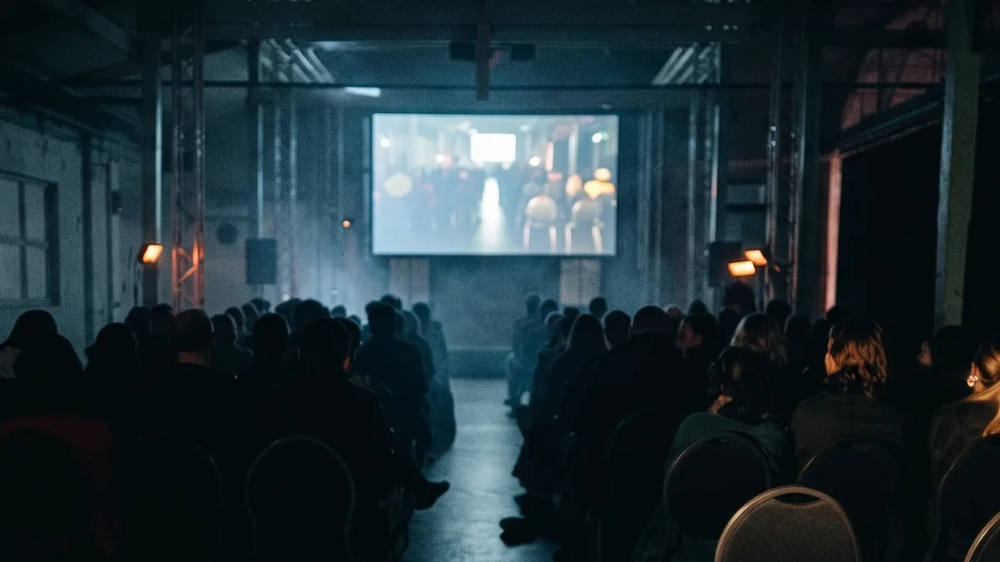

Brand & Identity
A complete identity — logo, colour, type, voice — that looks right on a ute, a tender document and an Instagram grid. Built to be used, not just admired.
I'm Michael Beets — creative director, interactive developer and founder of Beets & Co. I've spent a decade working on campaigns and brand work for clients like Volvo, the Australian Defence Force, Woolmark, St.Hugo Wines and Nandos, and I bring that same senior-level thinking to Bayside businesses — building the brand, the website, the story and the content that make customers choose you first.

Agencies grow by adding clients. I grow by going deeper. I keep the roster small so each client gets a senior partner who actually knows their world, answers their calls, and treats the work like it has my name on it — because it does.
The person you meet in the first call is the person doing the strategy, the design and the words. No account managers, no silent handoffs, no learning on your budget.
We understand your business — your customers, your margins, the jobs you want more of. The marketing gets sharper because the relationship is real.
A smaller roster means I'm genuinely invested in your results — not spread thin across twenty accounts. You get more thinking, more responsiveness, and work that reflects where you actually want to go.
Most businesses end up stitching together a logo guy, a web person and someone's nephew who "does reels." I build the whole thing as one connected system — so every touchpoint pulls in the same direction.
A complete identity — logo, colour, type, voice — that looks right on a ute, a tender document and an Instagram grid. Built to be used, not just admired.
Fast, clear websites that turn visitors into enquiries — and rank where it counts. Local SEO, Google Business Profile and structured data built in from day one.
Local search, ads, email and content aimed at the postcodes and jobs you actually want. Reported on revenue and calls — not likes and impressions.
This is where my background really shows. Brand films, site walk-throughs, testimonials and social cut-downs — shot and edited with a director's eye, made to sell rather than to win festivals.
A smart assistant trained on your pricing, services and FAQs — capturing and qualifying leads around the clock, then handing the hot ones straight to you.
A custom home builder who delivers the home you set out to build — and a journey worth enjoying along the way. We're rebuilding their entire presence together.

"We deliver custom homes through a streamlined, end-to-end process — staying true to your vision, so what you set out to build is exactly what you come home to."
From identity through to a website that ranks, a steady content rhythm and films that show the quality words can't — all built to make choosing Crowncon feel obvious.



For over a decade I've led creative across campaigns, brand systems and interactive work for clients including Volvo, the Australian Defence Force, Nando's, Aptamil and Hugo Wines — and shown work at Melbourne Design Week, Venice and Cannes. As a creative director and interactive developer, I know how to shape a brand story and then actually build it.
The same instinct that makes a campaign land is the same one that makes a business impossible to ignore. I'm not just a strategist handing off to a production team — I work across the whole thing, and I bring in the right specialists from my network when the job calls for it. Senior thinking at every stage, with the people to back it up.
I live and work in Bayside, and I'd rather pour myself into a few local businesses I believe in than churn out work for fifty I'll never meet. The trades and operators around here build real things for real people. They deserve a brand that's as good as the work. That's why I'm here.
Short, accountable stages with fixed scope and fixed quotes. You always know what's happening, who's on it, and what it costs. Most projects go live in two to six weeks.
A proper working session to map your customers, your competition and the one bottleneck costing you jobs.
Week 1Positioning, message and a fixed plan of what to build first. One clear direction — not five moodboards to police.
Week 1Identity, website, films and content, designed and built together so every piece looks like it belongs.
Week 2–4Go live, train your team, wire up the dashboards. You can see leads and calls from day one.
Week 5–6An ongoing partner for content, campaigns and the next move — for the few clients who stay on.
OngoingPractical thinking on brand, web and marketing for local businesses — written by the person doing the work.
Most local businesses have a logo. Few have a brand. The practical difference — and why the gap is costing you jobs.
Read articleWhat a Bayside business website needs to win trust in the first seven seconds — and rank in your suburb.
Read articleGoogle Business Profile, reviews, on-page signals and suburb content — what moves the needle and what doesn't.
Read articleTell me about your business and what you're trying to do. I'll come back to you personally — either to set up a call, or to point you somewhere useful if it's not the right fit.